making-of-a-(transit)-system-map.
old map -->.
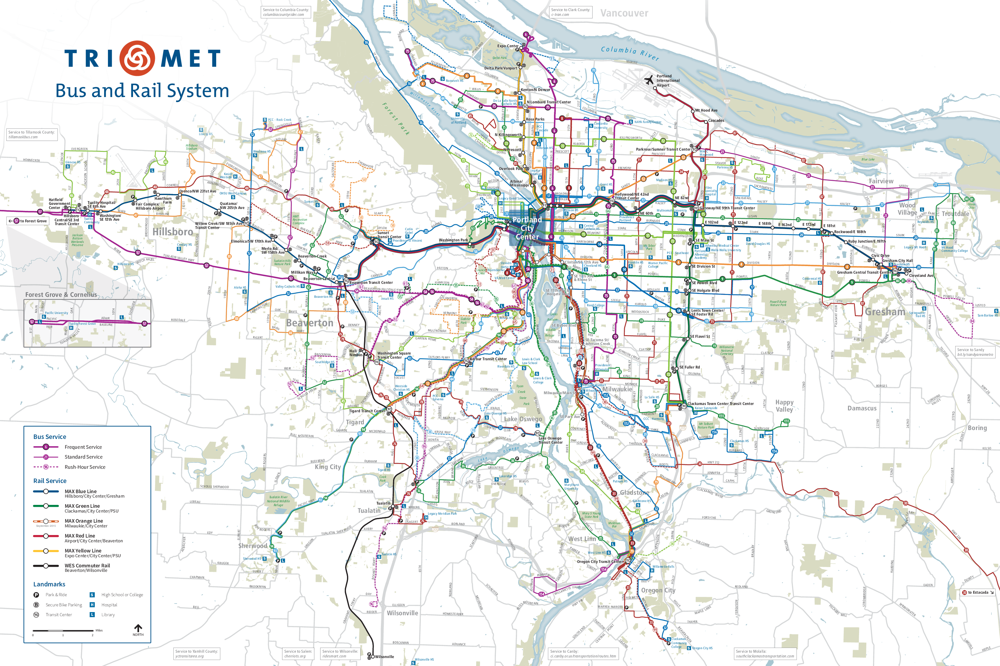
what is the purpose of this map?
provide an overview of TriMet transit service.
clearly illustrate where routes go and how they interact with each other.
indicate the mode, frequency & span of those routes.
the map provides and overview of this transit serves the region and how the various routes work in conjunction with one another.
understand its inherent limitations.
it's a static, small scale, 14" x 21" map.
detailed trip planning.
The scale of the map effectively prohibits this
there are better tools for that, like this -->.
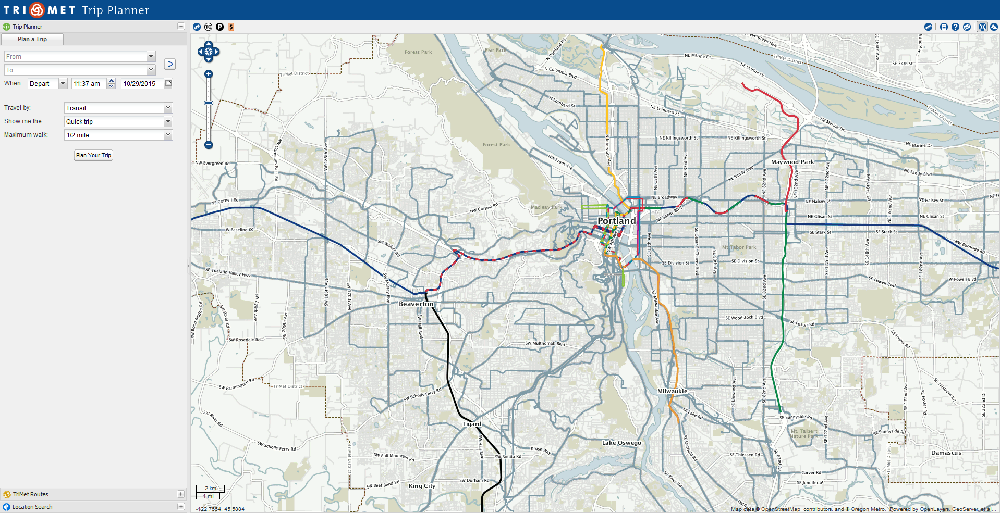
inspiration -->.
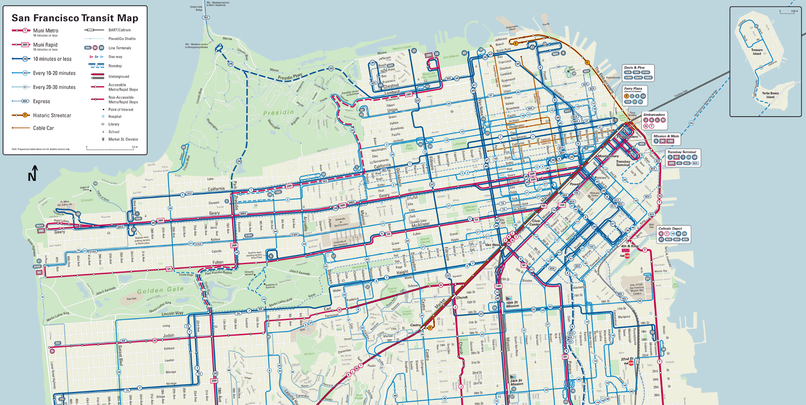
extremely clean lines help bring order to a complex system
Attribution:
SFMTA Muni System Map 2015 (San Francisco):
https://www.sfmta.com/maps/muni-system-map
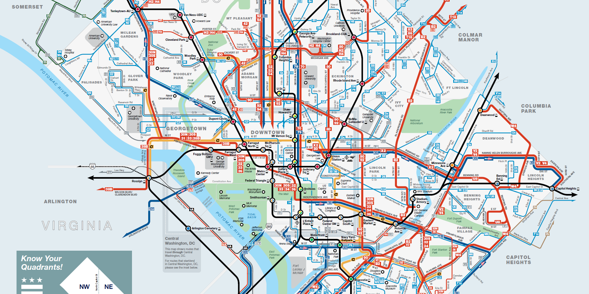
This map deviates from true geography significantly, but still serves its purpose very well
Attribution:
WMATA Metrobus System Map (Washington, DC)
http://www.wmata.com/bus/maps/
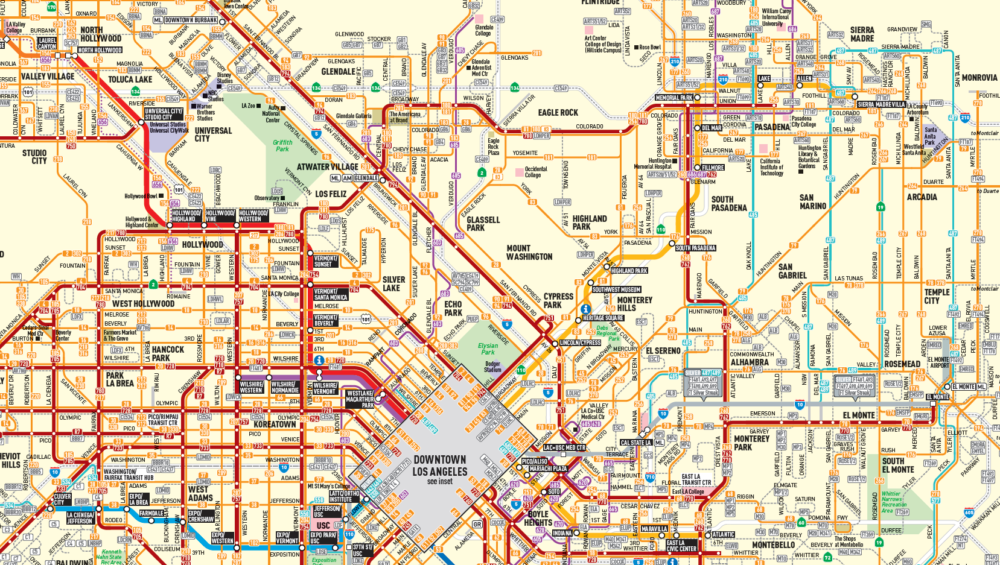
complex network does a good job of showing service levels
Attribution:
LA Metro System Map
https://www.metro.net/riding/maps/
resource:
human transit (blog).
Jarret Walker of Human Transit has extensively studied what makes an effective transit map and I drew heavily on the principals that he has extracted
approaches (to implementing cartographic techniques) -->.
plan a: automation.
I am both a cartographer and a coder and being able to write scripts that automate cartographer techniques has made my life a lot easier
plan b: painstaking, manual editing :| .
Plan A is better than Plan B, unfortunately there was still a fair amount of B
cartographic obstacles -->.
1. scale
(1:100,000).
-understand limitations of this small scale
-scale ties into all of the forthcoming challenges
.
2. generalization.
simplification vs. smoothing.
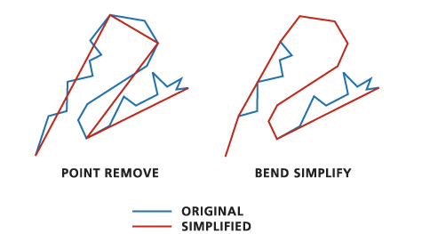
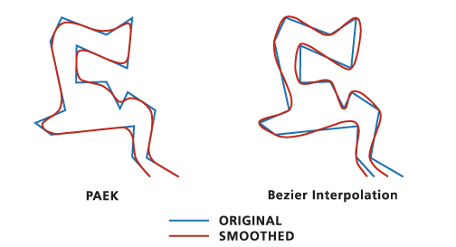
geographic accuracy
vs.
utility.
the latter end of this spectrum this becomes more of a design project, with GIS on the fringes
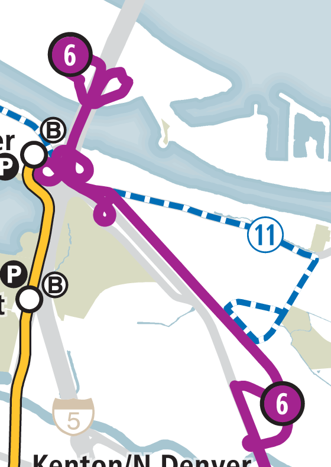
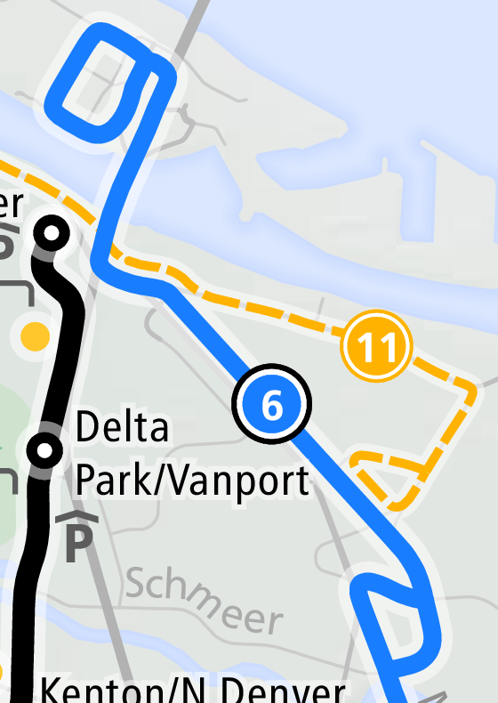
embellishment -->.
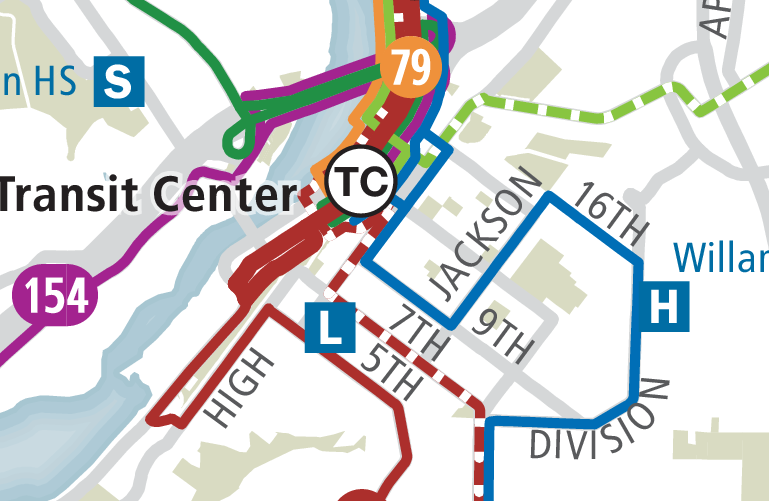
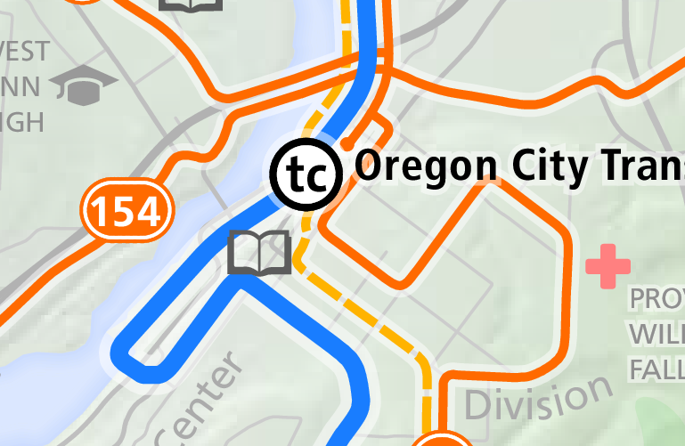
3. unifying divided streets.
dual carriageway.
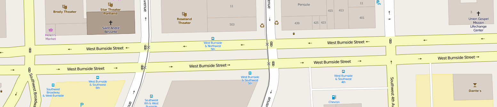
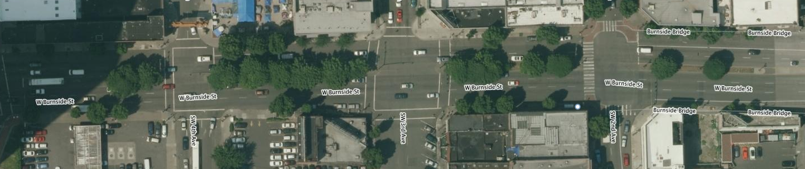
couplet -->.
problem:
multiple geometries respresent a single corridor
automation options -->.
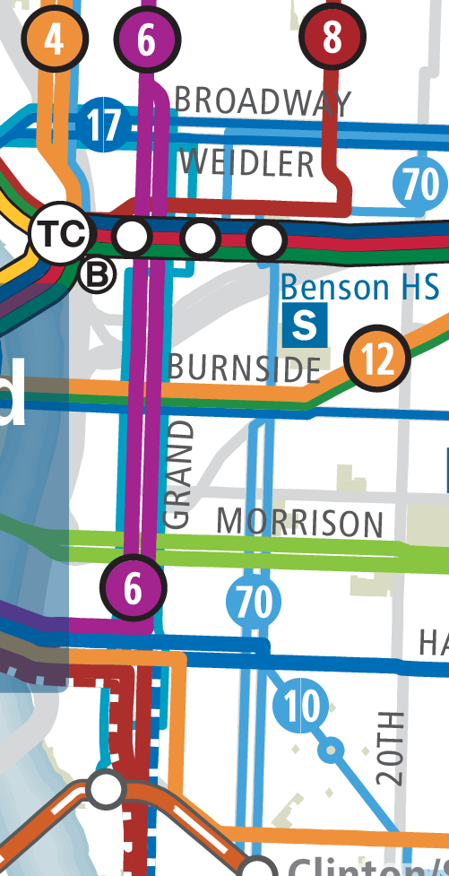
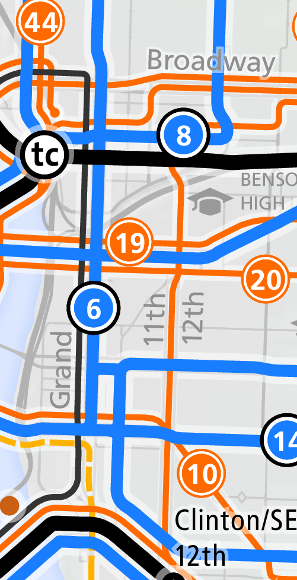
notice the labeling technique of placing the street names above and below the geometry that represents the couple to indicate that there are two streets
4. overlapping routes.
solution:
offsets.
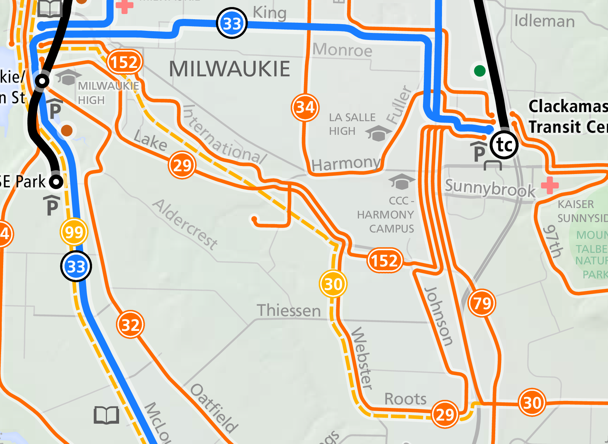
no viable automation options
(to my knowledge)
tracing with an offset in a gis -->.
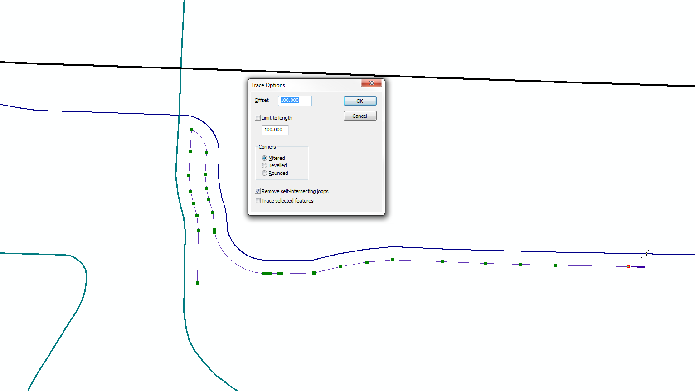
calculating offset distance -->.
its easier to think about offsets in points.
a point is a unit of measurement in graphic design
1 point =
1/72 of an inch.
using the map scale, points can be converted to map units.
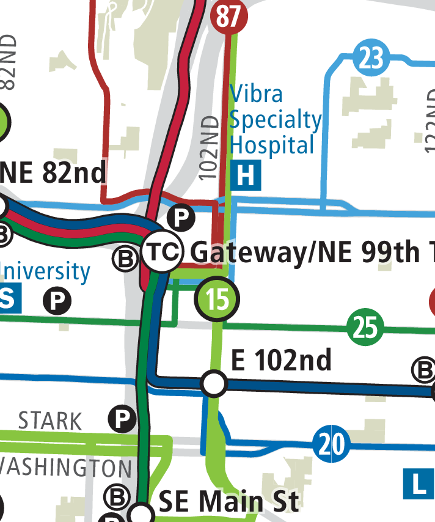
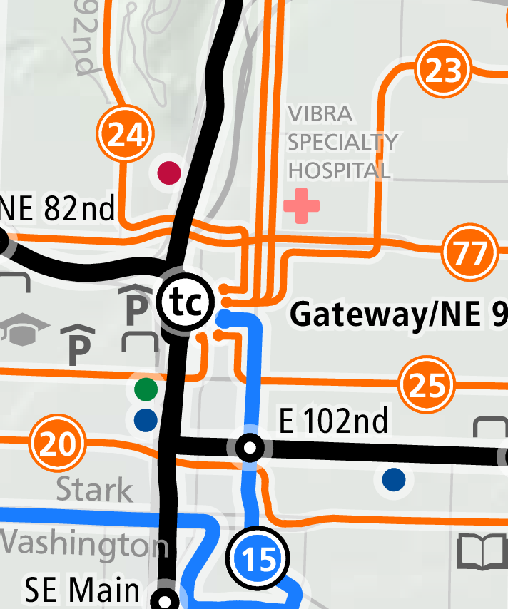
adapting when space runs out -->.
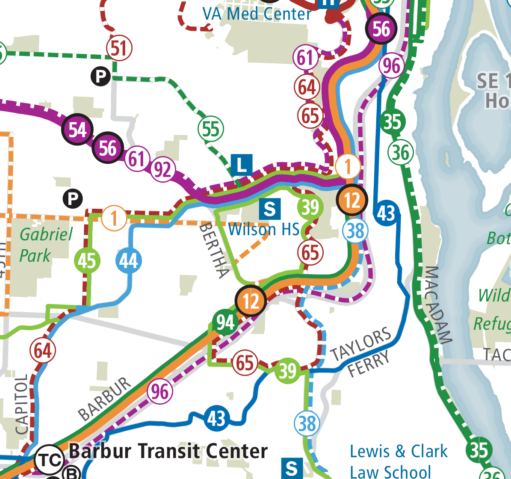
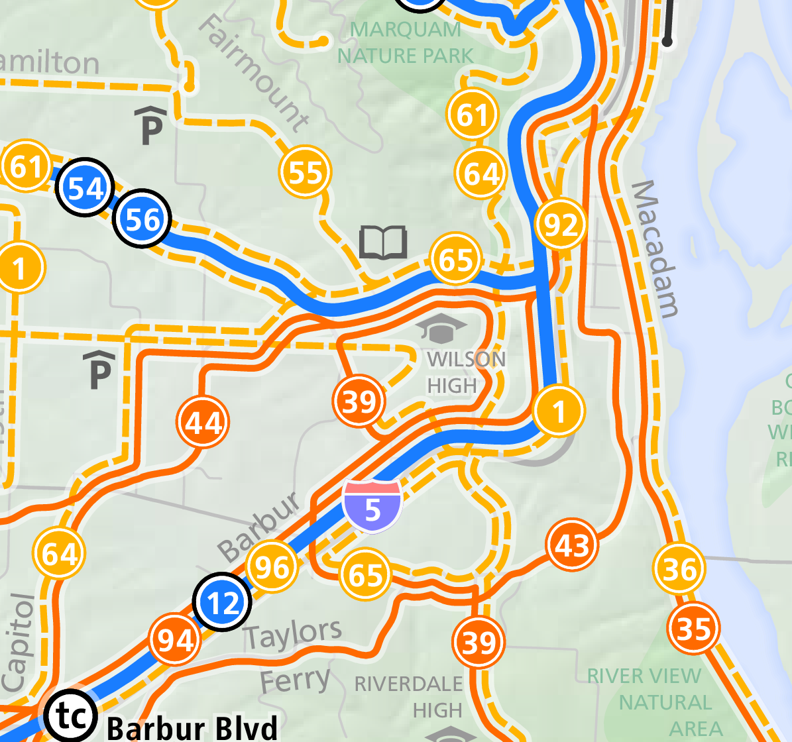
5. effective use of line color and weight.
questions?
contact:
grant.humphries@gmail.com
github/slides:
https://github.com/grant-humphries/presentations/making-of-a-system-map